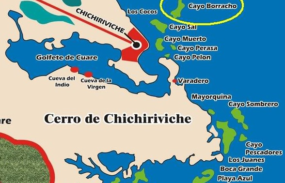
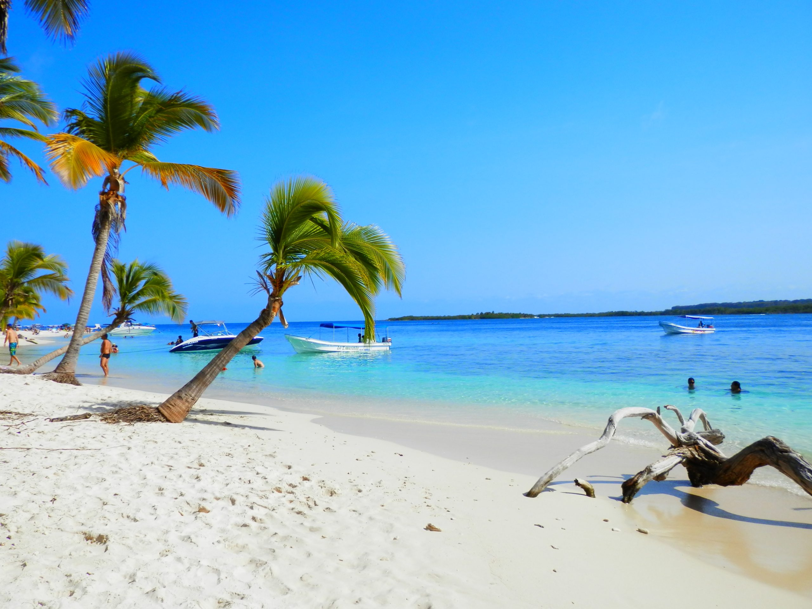
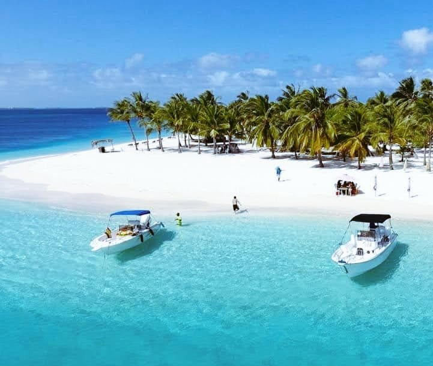
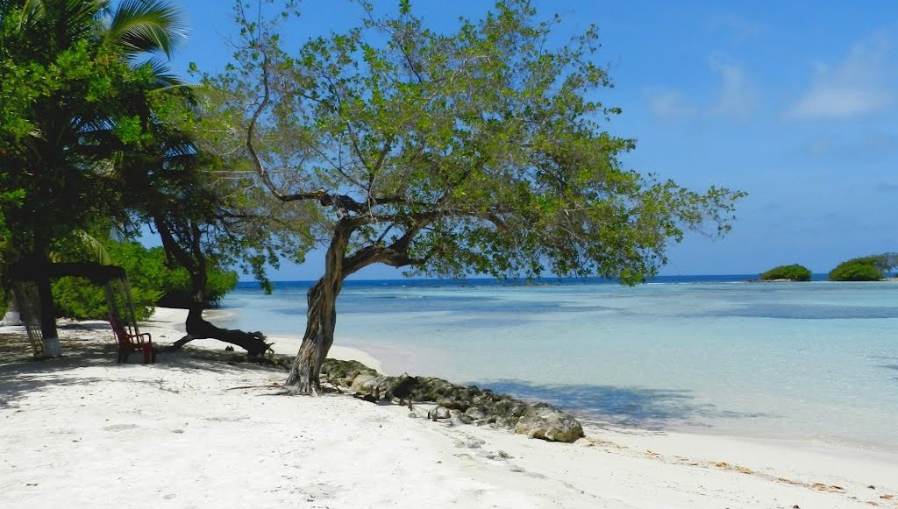

Paseos
Entre nuetros recorridos tenemos las mejores 3 opciones para tus aventuras y experiencias: Cayo Sal, Cayo Sombrero y Cayo Pescador. Cualquiera que elijas es la mejor opcion, al igual con nosotros puedes ir a los 3 Ahora mismo pulsa aqui y ve lo que tenemos para ti.

Cayo Sal
Es una excelente playa y de fácil acceso. Su orilla está llena de muchas palmeras, arena blanca y aguas tranquilas y cristalinas. Cuenta con el servicio de alquiler de sombrillas, un bar e incluso una pequeña capilla. El lago salado ubicado tierra adentro puede ser interesante para caminar durante la marea baja.


Cayo Sombrero
Se considera la playa más famosa gracias a sus increíbles paisajes submarinos, aguas de oleajes suaves y sus bosques de palmeras ideales para pasar un día en familia. También es un buen lugar para hacer snorkel. Cuenta con alquiler de sombrillas y hamacas, así como dos restaurantes que ofrecen productos marinos muy frescos.
Cayo Pescadores
Es una isla pequeña ubicada al sur de Cayo Sombrero, al este de Cayo Alemán y al norte de Cayo Los Juanes, es un territorio lleno de corales y poca marea, está a 40 minutos de Chichiriviche. Está protegido como parte del parque nacional Morrocoy. Destaca por sus aguas cristalinas y poca profundidad por lo que se le considera ideal para traer niños.
